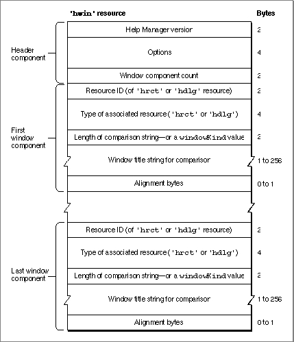

Legacy Document
Important: The information in this document is obsolete and should not be used for new development.
Important: The information in this document is obsolete and should not be used for new development.


The Window Help Resource
To associate the help balloons defined in an'hrct'resource with a particular window, you must create a window help resource. Unless you include an item of typeHelpItemin an item list resource, you also must create a window help resource to associate an'hdlg'resource with a particular alert box or dialog box. The window help resource is a resource of type'hwin'. All'hwin'resources must have resource IDs greater
than 128.The
'hwin'resource merely associates'hrct'and'hdlg'resources with windows. To specify hot rectangles, help balloon characteristics, and help messages for areas in a static window, you must use'hrct'or'hdlg'resources, which are described in "Specifying Help for Rectangles in Windows" on page 3-62 and "Providing Help Balloons for Items in Dialog Boxes and Alert Boxes" on page 3-47, respectively.The format of a Rez input file for an
'hwin'resource differs from its compiled output form. This section describes the structure of a Rez-compiled'hwin'resource. If you are concerned only with creating'hwin'resources, see "Associating Help Resources With Static Windows" on page 3-63 for a detailed description of how to use Rez input files to create'hwin'resources.An
'hwin'resource consists of a header component and a variable number of window components. Figure 3-40 shows the general structure of a compiled'hwin'resource.Figure 3-40 Structure of a compiled window help (
'hwin') resource If you examine a compiled version of an
'hwin'resource, you find that the header component consists of the following elements:
If you examine a compiled version of an
- Help Manager version. The version of the Help Manager to use. This is usually specified in a Rez input file with the
HelpMgrVersionconstant.- Options. The sum of the values of available options, described in "Specifying Options in Help Resources" beginning on page 3-22.
- Window component count. The number of window components defined in the rest of this resource. The Help Manager determines the end of the
'hwin'resource by
using this component count information.
'hwin'resource, you find that a window component consists of the following elements:
- Resource ID. The ID of the associated resource (either
'hrct'or'hdlg') that specifies the help messages for the window.- Type of associated resource. A resource type; either
'hrct'or'hdlg'.- Length of comparison string--or a
windowKindvalue. If the integer in this element is positive, this is the number of characters used for matching this component to a window's title. If the integer in this element is negative, this is a value used for matching this component to a window by thewindowKindvalue in the window's window record.- Window title string. If the previous element is a positive integer, this element consists of characters that the Help Manager uses to match this component to a window by the window's title. If the previous element is a negative integer, this is an empty string.
- Alignment bytes. Zero or one bytes used to make the window title string end on a word boundary.